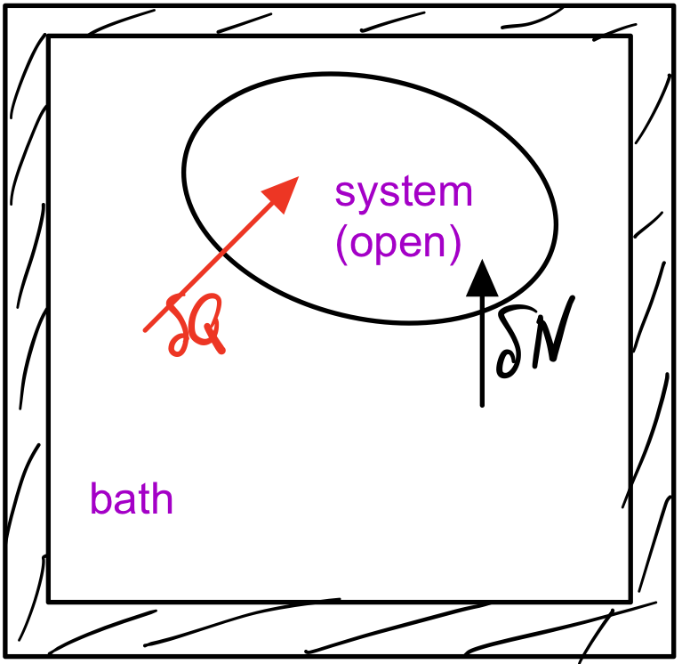

Trading conserved quantities between reservoir and system // External forces#
We have seen how the exchange of energy between reservoir and system biases the microstates of the system in a way described by a Boltzmann factor. In this section, we’ll see that the same happens when we trade other conserved quantities, like particle numbers or volume, except that the corresponding Boltzmann factors involved other (conjugated) variables than energy and temperature. We will also find that mathematically the same happens under the action of an external force, generating a Boltzmann factor that involves the force and the conjugated extensive quantity of the system, e.g. an external pressure acting on the volume of the system or a magnetic field acting on the magnetization of the system.
Particle exchange and chemical potential#
So far, we have considered closed systems and derived and studied the Boltzmann distribution. Now our systems are open and the particle number might change. To derive the microstate probability distribution, we retrace the steps that led us to the Boltzmann distribution, except for allowing the system to trade particles with the bath.
{kind=link}
The probability to find a system in a given microstate \(\nu_S\), in which the system has energy \(E_S\) and \(N_S\) particeles, is proportional to the number of available bath states,
Next we Taylor expand the entropy of the large reservoir,
where we have the usual thermodynamic definition of temperature
and introduced the chemical potential
The chemical potential can be interpreted as the free energy added to the system when we inject one particle into the system.
With these definitions, we obtain the Gibbs distribution
where the grand canonical partition function \(Z\) is given by the sum
over all microstates \(i\).
To obtain the probability to find the system in any one of the states with energy \(E_S\) and particle number \(N_S\), we have to multiply the Gibbs distribution with the multiplicity of system states,
If the system is large, this distribution has a pronounced peak, such that the system will have an almost deterministic energy \(U\) and particle number \(N\). The conditions for the maximum imply
Thus, temperatures and chemical potentials of bath and system are equal at equilibrium.
Analogously to Section, one can show that the grand potential minimizes
which amounts to maximizing entropy under the constraints of mean energy and particle number
Volume exchange and pressure#
In complete analogy, we can also treat the case where bath and system trade energy and volume, which we briefly summarize for completeness. One obtains the microstate distribution
with the equilibrium condition of equal pressures \(p_R=p_S\).
The equilibrium distribution minimizes the Gibbs free energy
where the last sum goes over all particle species \(i\).
External fields acting on extensive quantities#
(show figure involving reservoir and external field)